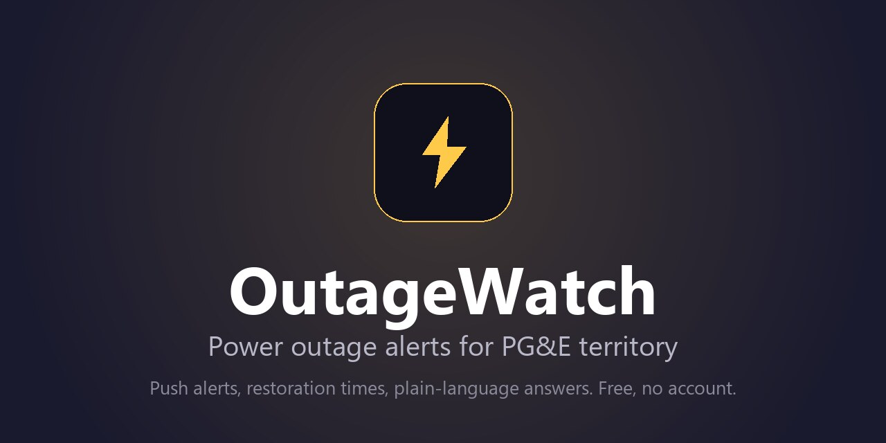
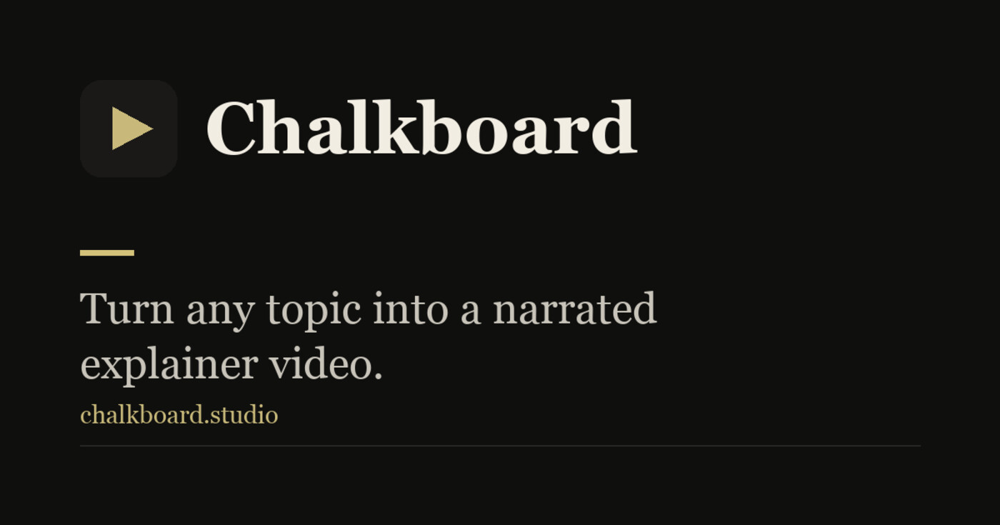
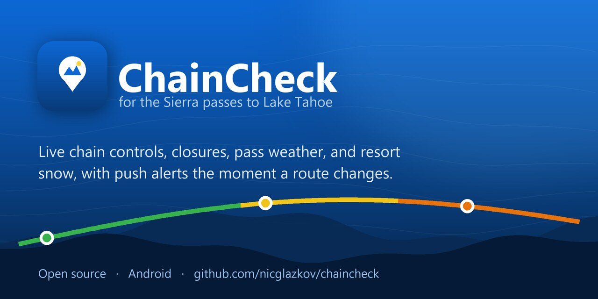
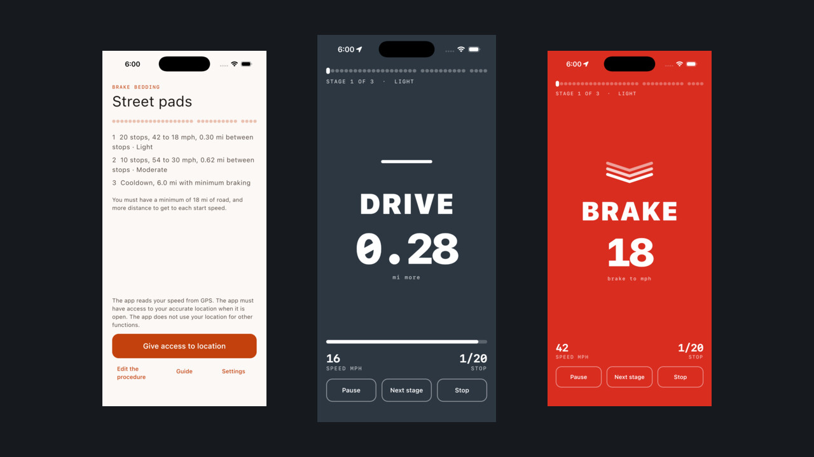
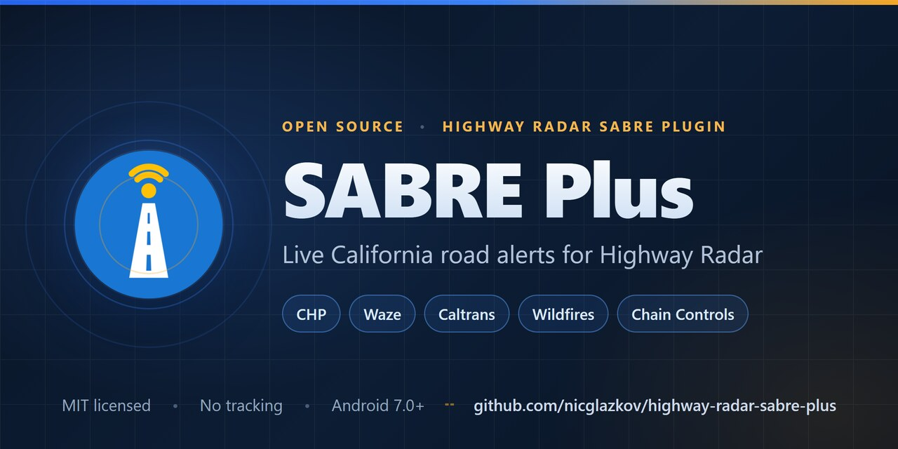
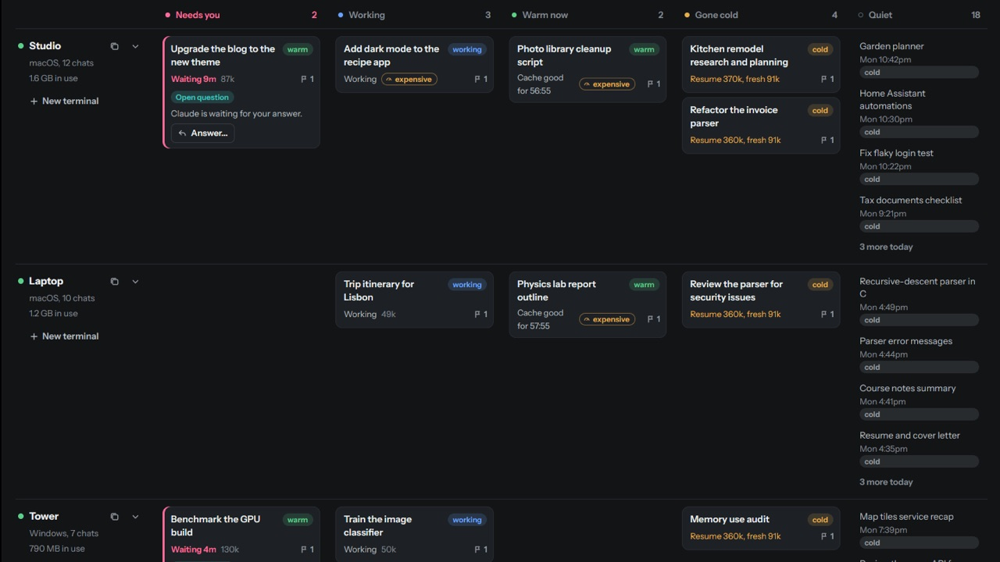
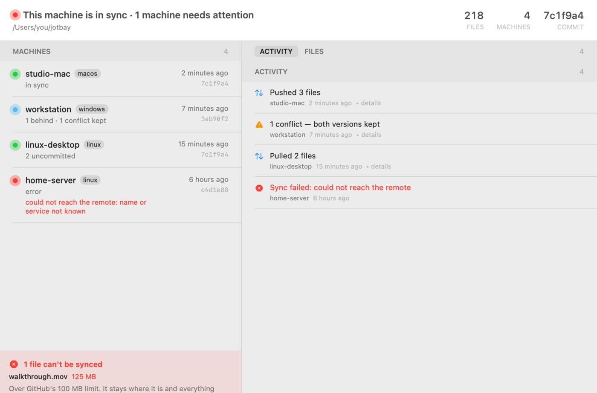
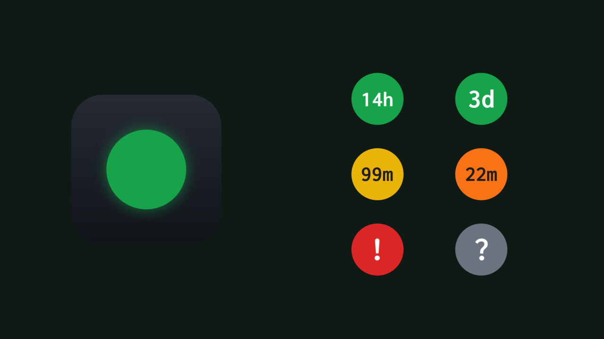
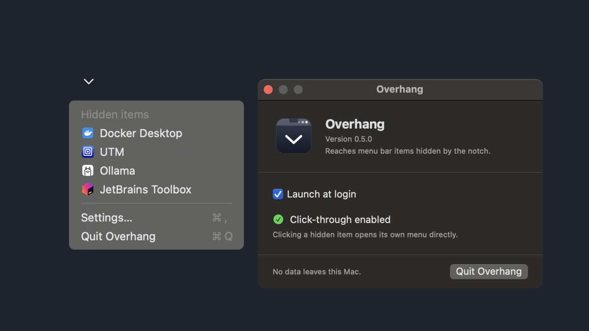
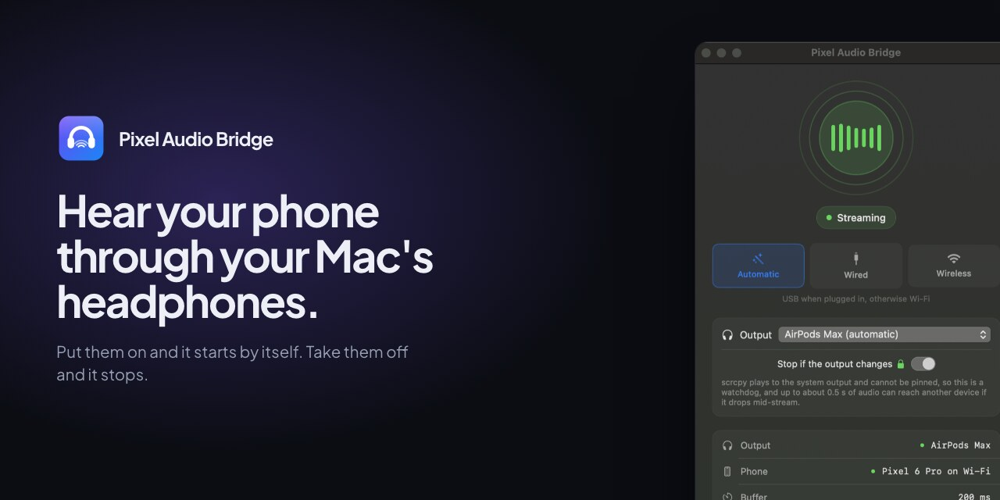

Live services
live now

CommuteScout
Live road conditions from 53 official agency feeds across 37 states: incidents, closures, chain controls, live traffic cameras, wildfire perimeters, and toll pricing. Also a public REST API and an MCP server.

FiberWatch
Type any US address and see every ISP that files coverage there, then get an email when something better arrives. Built on 49.1 million FCC records covering 2,067 providers.

OutageWatch
PG&E outage alerts with live restoration estimates, and plain-language answers instead of a utility status code.

Chalkboard
Turns any topic into a narrated explainer video through a pipeline that drafts, fact-checks, animates, and renders it. Open source; the hosted version is in private beta.
Apps

ChainCheck
Tahoe winter driving in one app: live chain controls, closures, pass weather, and resort snow. The chain rules are tested code, not prose.

Brake Bedding
A brake bedding coach that talks you through new pads using live GPS speed. No network permission, no ads, no tracking.

SABRE Plus
Five live road feeds on your Highway Radar map: CHP, Waze, Caltrans closures, wildfires, and chain controls.
Desktop and hardware

Switchboard
One board for the Claude Code chats on all your computers: see which need you, answer them, open their terminals, and start new ones on any machine.

Jotbay
Keeps a folder of markdown notes in sync across every machine you use, through a private git repository you own.

GCloud Dot
Know before your cloud session expires, not after your next command fails. It measures the session and learns how long yours last.

Overhang
Recovers the menu bar icons macOS hides behind the notch. Under 2 MB, no private APIs, and no permissions at all.

Pixel Audio Bridge
Hear your Android phone through the headphones already connected to your Mac. Put them on and it starts by itself.

UR10 chess robot
A written-off industrial arm that a few of us rebuilt to play chess. It has not lost to a human yet.